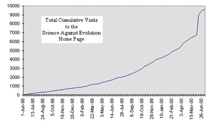
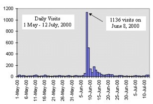

| Behind the Scenes - July 2000 |
 |
As you can see from the curve, the number of visitors had been gradually increasing (until June 6). There are probably several reasons for that.
Part of the increase is probably due to the growth of the Internet itself over the past two years. Millions of users search the web for various topics every day. Some fraction of those millions search for pages about evolution. Some fraction of those find our web page. Even if the fractions remain the same, the total number of visitors will increase proportionately as the number of web users increases. |
Part of the increase is probably due to repeat visitors. We add a new set of articles every month, so some people probably make it a point to return every month to read the latest articles.
Part of it is probably due to links on other web pages. As more people who like our site add links to our site from their site, we get more referred visitors.
We don't know which of these three reasons is the most important, but we suspect they all contribute to the increased traffic. Although we can't say exactly why the traffic on our web site is growing, we have enough history to recognize what our normal growth is.
On May 25, we were informed that StudyWeb had removed us from their site. Naturally, we were concerned that this might affect our traffic. So, we started watching our daily counter more closely. There was no measurable decrease in traffic from May 25 to the end of the month. Then came the big surprise!
 |
During the month of May we averaged 15.3 visits per day. The highest number of visits was 31, with only two other days over 20. So, June 6 was a good day with 19 visits. June 7 we set a record with 55 visits. But that record didn't last long because we had 1,136 visits the next day! We had 506 more visits the following day, and three of the next four days were over 100. Clearly, this was not normal.
This increased number of visits naturally coincided with a dramatic increase in e-mail. The only thing that has not increased is the number of hours in a day, and number of people to answer the mail. Our backlog of letters to publish has gotten even bigger, as you can imagine. We will be sharing some of these letters with you in the months to come. |
What caused this surge of visits? We can only guess. We suspect that whoever writes the Memepool page must have visited our site many times on June 7. Then, on June 8, he or she wrote,
| We've all heard of the age-old dispute of Evolution vs. Creationism and most of us will remember the Creationists' recent forays into the US education system, but let's not forget that the theory of evolution is not undisputed in the science community either. Do check out this topical index on the matter. |
The underlined sentence was a link to our page. We think that more than 1,000 people followed that link.
Then there was nothing more than the mention of our web site name (with link) on the Free Republic Conservative News Forum on June 9 which probably caused the secondary spike. (We know at least one person found us that way because he told us so in an e-mail.)
Things have settled back down to normal now, with a lasting residual effect. Last week we averaged 19 hits per day, which is a 24% increase over the 15.3 hits per day we were receiving before the Memepool reference.
| Quick links to | |||
|---|---|---|---|
| Science Against Evolution Home Page |
Back issues of Disclosure (our newsletter) |
Web Site of the Month |
Topical Index |